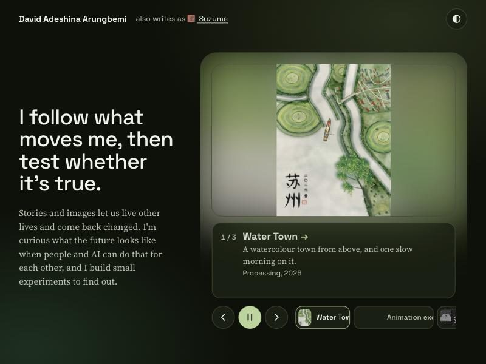
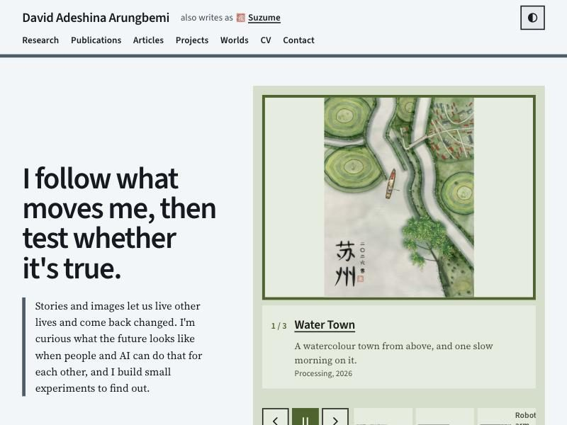
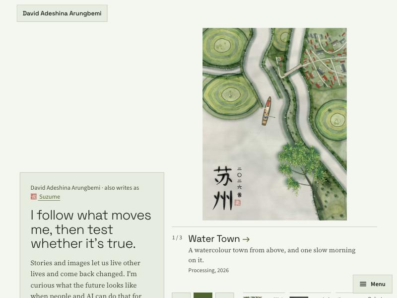

Site redesign · prototypes on the branch claude/site-redesign-26fc25
Three directions for the new site
Each one is a working homepage, a topic page and an article, made from your real text and pictures. Nothing here is live. Your site stays exactly as it is until you say so.

A
A dark room lit by whatever is showing.
- Water Town
- Animation exercise
- Robot arm, moved by a script
- Colour
- The room takes its light from the clip that is playing, and from any piece you point at or tab to. In an article it changes with each picture you pass.
- Moving around
- A bar at the bottom of the screen. On a phone it keeps Research, Publications and CV, and the rest goes under Menu.
Homepage Topic page Article

B
Your four research topics are the way in.
- All
- Stories and AI
- Aesthetics and perception
- Visualisation and interaction
- Minds and meaning
- Colour
- Choose a topic and the whole page takes its colour, while that topic's work comes forward in every section. The showcase frame takes the colour of the clip that is playing, and a card you point at takes its own picture's colours.
- Moving around
- Plain links at the top, and a topic bar that stays in view as you scroll.
Homepage Topic page Article

C
Each part of the homepage is a room of its own.
- Start
- Now
- Research
- Publications
- Articles
- Projects
- Worlds
- Contact
- Colour
- As you walk from room to room the page changes colour, and between light and dark, following each room's picture. In an article every picture changes the scene. This one follows what you wrote about March Comes in Like a Lion: the world and the feelings moving together. If your device is set to dark, every room stays dark.
- Moving around
- A small map of the rooms at the side of a wide screen, with CV in it. On smaller screens it is a Menu button.
Homepage Topic page Article
What I need from you
- Pick one direction, or mix parts (for example B's topic bar with C's rooms).
- Choose the clips. Right now the showcase plays the three clips the site already has. They are only placeholders.
- Tell me what you don't like, however small. Then I rebuild the whole site in that direction, on this branch, and show you before anything goes live.
The clips
Playing now, in this order:
- Water Town (Processing, 2026)
- Animation exercise (Blender, 2024)
- Robot arm, moved by a script (Blender and Python, 2025)
Pieces that move, each of which can give a clip exported from its own sketch:
- Colour Bird: it sways and blinks
- Value Tomography: it turns
- Value Chords: a click lights up one path
- Ripples and Caustic Bloom: both run frame by frame, so they may give a clip
- The robot arms drawing: the 11 second clip already on some of your tailored pages
- Matsumoto: later, once that piece is done
Beyond the Counted Fields is private, so none of it is used here. Tell me if you want part of it in the showcase.
What stays the same
- Every address stays the same: all 28 public pages, the PDFs, sitemap.xml and robots.txt.
- Your words stay as they are, with the alt texts you approved, the page titles and descriptions, the link previews and the structured data.
- Fonts stay on your own site. Nothing loads from other sites.
- The links back to Medium stay.
- The 8 tailored pages and 15 tailored CVs under for/ keep their current look. The new design gets its own files, and I'll ask before changing any of them.
- The build scripts will make the new pages, so importing an article or editing Worlds works as before.
How these are checked
- Contrast: every colour set, in light and dark, is checked by a script for WCAG AA (text at least 4.5 to 1). A page can't take on a colour set that fails.
- Keyboard: everything can be reached and used with the keyboard, with a visible focus ring. The showcase has pause, previous, next, a choice of clip and the arrow keys. It stops moving on while you read or tab inside it, and while it is off screen.
- Reduced motion: nothing plays by itself. Colours still change, with a short fade.
- Without JavaScript: each page reads in one fixed palette, and the showcase shows its first picture with links to the pieces.
- Phones: checked at 320 and 375 pixels wide: no sideways scrolling, no text under 14 pixels.
- One thing to know about C: when a room changes between light and dark, the background fades over 0.4 seconds and the text switches halfway. For about a tenth of a second the paler text is below the contrast rule. Everywhere else, and at rest, every page passes.
- One clip at a time: only the clip on screen loads and plays.
New words on screen (25)
Words in these prototypes that your site doesn't have now: labels, buttons and names read out by screen readers. Change any of them.
| Text | Where |
|---|
| 1 of 3 (each clip's place) | A B C |
| 11 of 18 (each section's count) | B |
| All sections | A |
| carousel (what a screen reader calls the showcase) | A B C |
| Choose a clip | A B C |
| Clip 2 of 3: Animation exercise (said when you pick a clip) | A B C |
| Menu | A C |
| Next clip | A B C |
| Nothing here for this topic. | B |
| Pause | A B C |
| Pause the showcase | A B C |
| Play | A B C |
| Play the showcase | A B C |
| Previous clip | A B C |
| Show work from | B |
| Showcase | A B C |
| Showing Stories and AI (said when you choose a topic) | B |
| Site | A B C |
| slide | A B C |
| Stories and AI page → (the chosen topic's name) | B |
| Switch to dark | A B |
| Switch to light | A B |
| Topic page → | B |
| Topics | B |
| Topics of this article | B |
The audit: today's site
Public pages (28)
- / Homepage
- /cv.html CV
- /images.html Worlds (106 pieces)
- /articles/ Articles
- /articles/mother-natures-rejection-of-self/ Mother Nature’s Rejection of Self
- /articles/dream-a-better-dream/ Dream a Better Dream
- /articles/you-are-what-you-prefer/ You Are What You Prefer
- /articles/in-brightest-day/ In Brightest Day, In Blackest Night, No Evil Shall Escape My Sight.
- /articles/who-deserves-moral-consideration/ Who Deserves Moral Consideration? I’m Not Sure Anymore.
- /articles/gestalt/ Gestalt: The Whole is not the Sum of Its Parts
- /articles/aesthetic-model/ I Tried to Build an Aesthetic Model of the Human Brain. I Failed. Here’s What I Learned.
- /articles/narrative-hypothesis-complexity/ The Narrative Hypothesis: Complexity
- /articles/i-ran-the-experiment/ I Ran the Experiment. Here Is What I Found.
- /articles/the-narrative-hypothesis/ The Narrative Hypothesis
- /articles/inside-qwen/ Inside Qwen 0.5B: A Behavioral Profile Across 32 Dimensions
- /articles/four-agents/ I Gave Four AI Agents a Philosophy and Put Them Under Pressure.
- /articles/the-question-was-mine/ The Question Was Mine. Everything After That Got Away From Me.
- /articles/sculpting-latent-space/ Sculpting Latent Space: What If AI Could Think in Clay?
- /articles/sound-and-meaning/ The Gap Between Sound and Meaning And Why AIs Don’t Have It
- /articles/interpretability-trap/ The Interpretability Trap
- /articles/self-reasoning-system/ A Self-Reasoning System
- /articles/the-mind-and-its-power/ 26 Oct 2025 — The Mind and Its Power
- /projects/ Projects (13)
- /stories-and-ai/ Stories and AI
- /aesthetics/ Aesthetics and perception
- /visualisation/ Visualisation and interaction
- /minds/ Minds and meaning
- /404.html Page not found (not in the sitemap)
Not listed anywhere: 8 tailored pages and 15 tailored CVs under /for/. They load the shared assets/site.css, site.js and theme.js, so those three files stay as they are. The 18 article sources in _writing/ are not published.
How the pages are made
- build_cards.py: the 13 projects; the homepage lists 6 of them.
- build_gallery.py: Worlds (images.html, 106 pieces) and the homepage's 7 Worlds pieces.
- build_blog.py: each article page from _writing/, the Articles page, the homepage's article lists and sitemap.xml. With --import it first copies new Medium posts.
- build_topics.py: the four topic pages, the Projects page and the homepage's Research section.
- Written by hand: the CV, the 404 page, and the homepage's opening, publications and contact.
The current look
Cream paper with a grain over it, Bodoni headings, small uppercase monospace labels, a red seal colour and moss green, a masonry grid in Worlds, and a light and a dark theme. None of the three directions uses any of these.